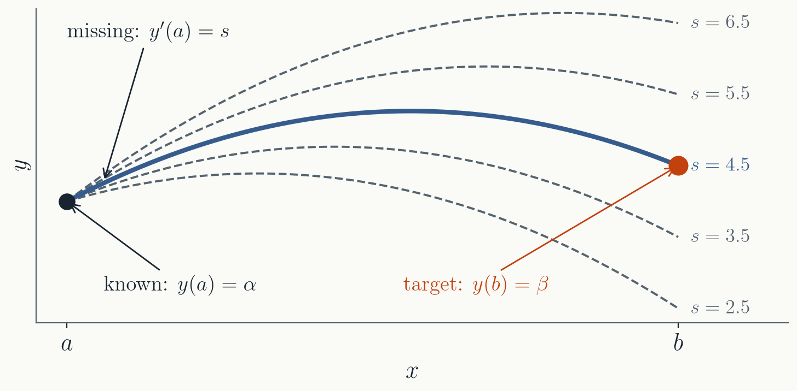
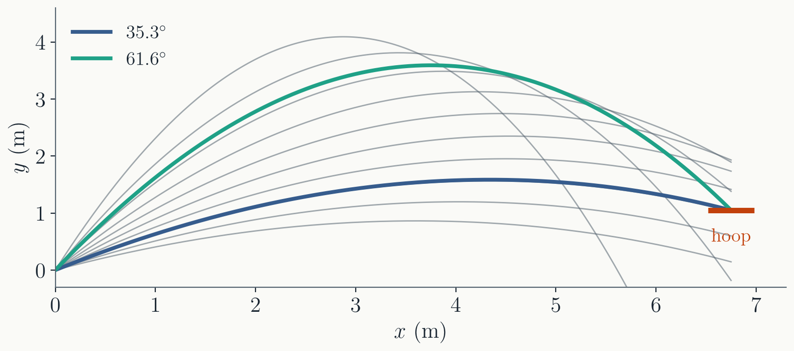
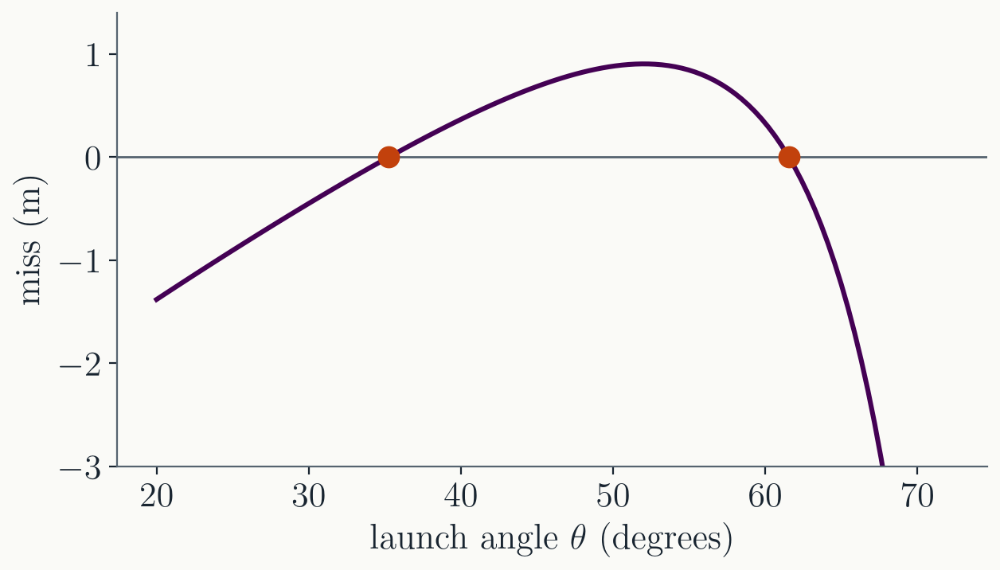
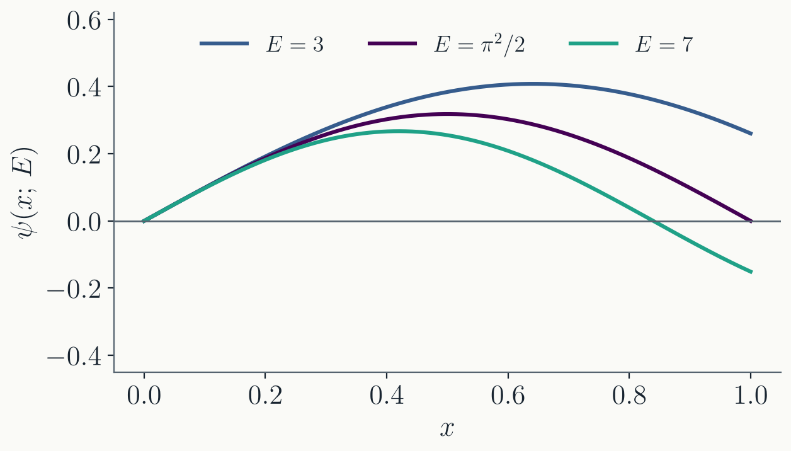
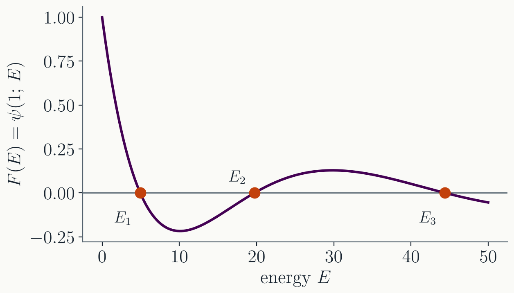
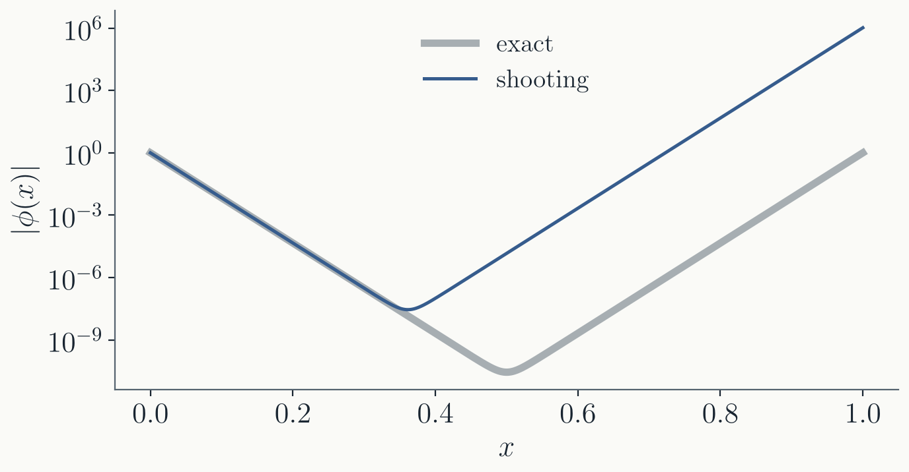
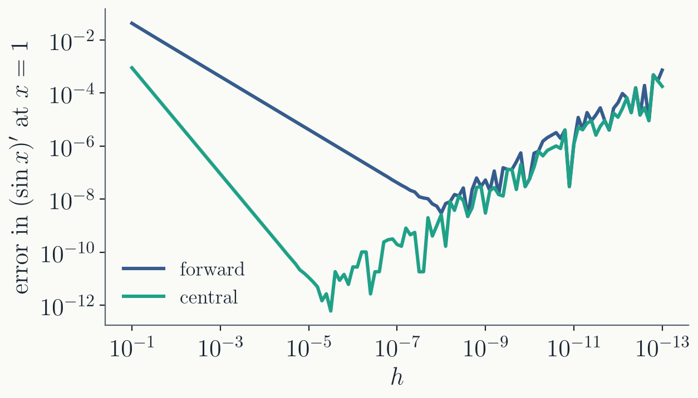
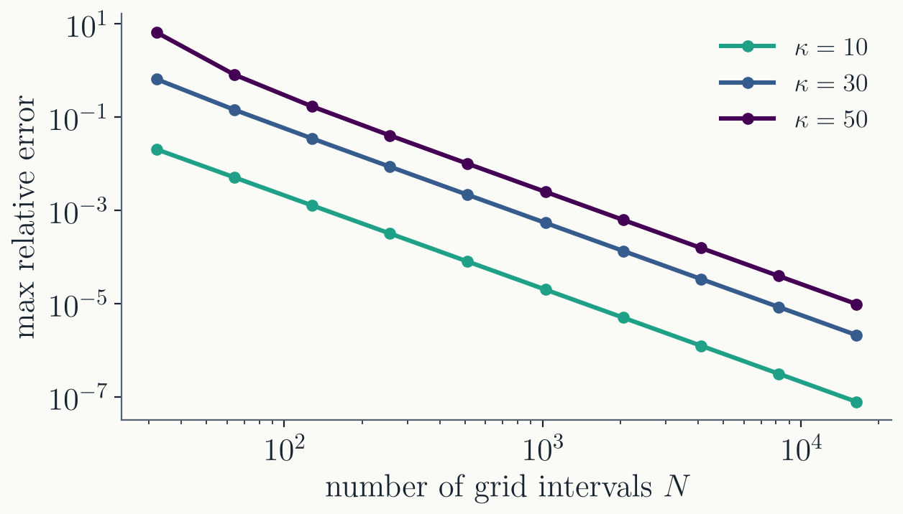
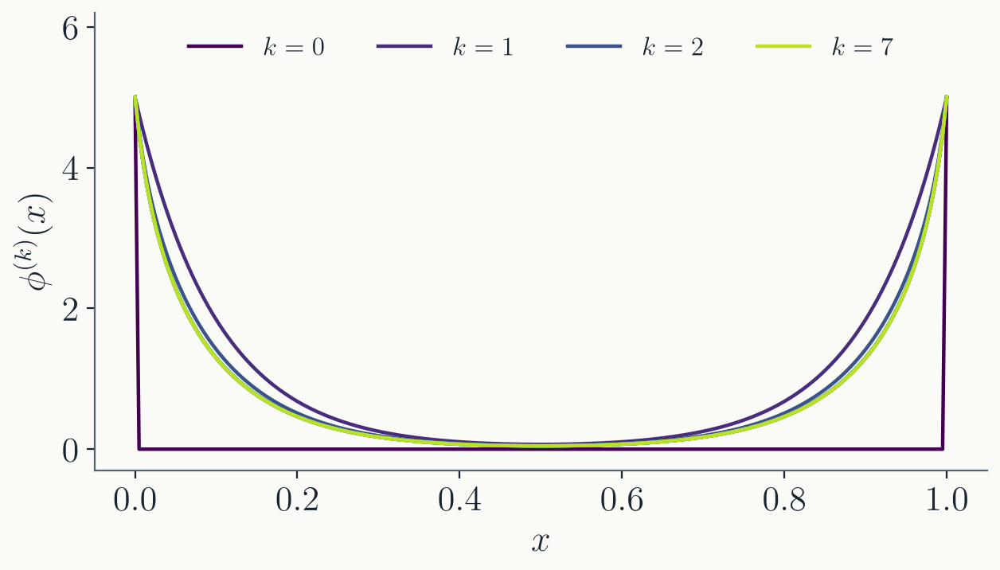
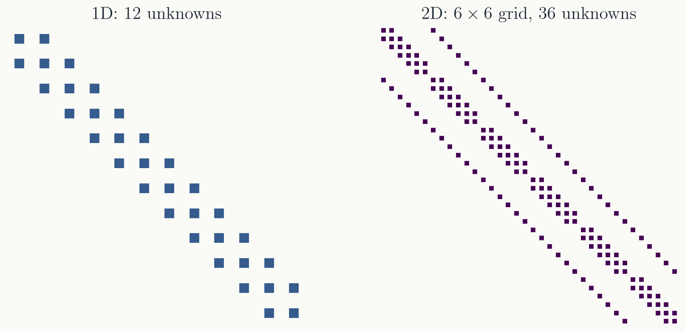

PHYS 4027 / 5027 · Fall 2026 · Lecture 12
Prof. Alex Chen
Department of Physics
Washington University in St. Louis
A second-order ODE, $y'' = f(x, y, y')$, needs two conditions.
An IVP can be marched forward one step at a time. A BVP cannot: a naive marching cannot guarantee the solution will meet $y(b) = \beta$.
Find the missing initial condition
How do you find out the way to shoot a projectile, so that it lands at a target location?
$y'' = f(x, y, y')$ with $y(a) = \alpha$ and $y(b) = \beta$. To march it like an IVP, we need $y(a)$ and $y'(a)$. We have only the first.

Shooting: find the initial slope $y'(a)$ whose solution lands on $y(b) = \beta$.

The ball leaves the hand at $10$ m/s, with air drag. The hoop is $6.75$ m away and $1.05$ m higher.
The starting point and the speed are known. The missing initial condition is the angle.
Try an angle, follow the ball to the hoop, see by how much it misses, and adjust.
Two angles go in: a flat shot and a high arc.
Call the missing slope $s$, and solve the IVP
$$y'' = f(x, y, y'), \qquad y(a) = \alpha, \qquad y'(a) = s.$$The solution $y(x;\, s)$ depends on $s$, and so does where it ends up at $x = b$. Measure the miss:
$$F(s) = y(b;\, s) - \beta$$Shooting is solving $F(s) = 0$: one equation for one unknown.
One evaluation of $F(s)$:
For the basketball, $s$ is the launch angle and $F$ is how far above or below the hoop the ball passes.

$F$ has no formula, but we can evaluate it at any $s$. Any root finder from Lecture 3 works. The secant method needs no derivative:
Each iteration is one new shot. Starting from $30°$ and $35°$: $35.3°$ after 6 shots. Starting from $60°$ and $65°$: $61.6°$ after 9.
$F$ has two roots, so the problem has two solutions. The starting guesses decide which one you get.
The time-independent Schrödinger equation for a particle of mass $m$ in a potential $V(x)$:
$$-\frac{\hbar^2}{2m}\frac{d^2\psi}{dx^2} + V(x)\,\psi = E\,\psi$$
At $x = 0$ we know $\psi(0) = 0$. Two things are unknown: the slope $\psi'(0)$ and the energy $E$.
The slope only sets the size: doubling $\psi'(0)$ doubles $\psi$ everywhere, and the zeros stay where they are. So fix $\psi'(0) = 1$.
The energy changes the shape. Too low, and $\psi$ has not come back to zero by $x = 1$; too high, and it crosses zero too early.
So we fix $\psi'(0) = 1$ and shoot in $E$.

Same recipe, with $E$ in place of $s$:
Each root is an energy level. The secant method started near the first one finds $E_1 = 4.9348022005$, equal to $\pi^2/2$ to 10 digits, in 9 IVP solves.
Last step: rescale $\psi$ so that $\int_0^1 \psi^2\,dx = 1$.
A linear BVP with a known exact solution:

Every solution is a mix of $e^{-\kappa x}$ and $e^{+\kappa x}$. The exact one decays away from each end over a length $1/\kappa$, down to $e^{-\kappa/2} \approx 10^{-11}$ in the middle for $\kappa = 50$.
Shooting from $x = 0$, an error $\delta s$ in the slope adds $\frac{\delta s}{\kappa}\sinh(\kappa x)$: a little of $e^{+\kappa x}$, which grows by $e^{\kappa} \approx 5 \times 10^{21}$ on the way across.
Here the slope is right to 15 digits, and the solution still misses by a factor of $10^6$.
Shooting marches across the whole domain. We need a method that does not march.
Solve for every point at once
Taylor-expand the neighbours, $y_{i \pm 1} = y_i \pm h y_i' + \tfrac{h^2}{2} y_i'' \pm \tfrac{h^3}{6} y_i''' + \dots$, and combine:
| forward | $y_i' \approx \dfrac{y_{i+1} - y_i}{h}$ | error $-\tfrac{h}{2} y''$ | first order |
| central | $y_i' \approx \dfrac{y_{i+1} - y_{i-1}}{2h}$ | error $-\tfrac{h^2}{6} y'''$ | second order |
| second derivative | $y_i'' \approx \dfrac{y_{i+1} - 2 y_i + y_{i-1}}{h^2}$ | error $-\tfrac{h^2}{12} y''''$ | second order |
Symmetric formulas cancel the even (or odd) terms of the expansion and gain an order. More neighbours give higher order.

The derivative of $\sin x$ at $x = 1$. Truncation error falls with slope 1 and 2.
Below $h \approx 10^{-8}$ (forward) and $10^{-5}$ (central), the subtraction $y_{i+1} - y_i$ cancels most digits, and the rounding error grows like $\epsilon/h$: catastrophic cancellation, Lecture 1.
A BVP grid has $h \sim 10^{-3}$ or larger, far from the floor. There, the order is what matters.
At each interior point, $\dfrac{\phi_{i+1} - 2\phi_i + \phi_{i-1}}{h^2} - \kappa^2 \phi_i = 0$. The known $\phi_0$ and $\phi_N$ move to the right-hand side:
A linear ODE becomes one linear system, $\mathbf{A}\boldsymbol{\phi} = \mathbf{b}$. Each row involves only a point and its two neighbours, so $\mathbf{A}$ is tridiagonal.
Solve it once, and every $\phi_i$ comes out together. No guessing, no iteration.

Slope 2 for every $\kappa$, as the second-order formula promises.
At $\kappa = 50$ with $N = 1024$: relative error $2.5 \times 10^{-3}$, where shooting was off by a factor of $10^6$.
Larger $\kappa$ needs a finer grid, since $h$ has to resolve the decay length $1/\kappa$. But the error is controlled by $h$, and no longer amplified by $e^{\kappa}$.
Make the same problem nonlinear, $\phi'' = \kappa^2 \sinh\phi$, and use the same grid. One equation per interior point:
$$\frac{\phi_{i+1} - 2\phi_i + \phi_{i-1}}{h^2} - \kappa^2 \sinh\phi_i = 0, \qquad i = 1, \dots, N - 1$$| one unknown (Lecture 3) | a vector of unknowns | |
|---|---|---|
| linearize | $F(x + \delta) \approx F(x) + F'(x)\,\delta$ | $\mathbf{F}(\boldsymbol{\phi} + \boldsymbol{\delta}) \approx \mathbf{F}(\boldsymbol{\phi}) + \mathbf{J}\,\boldsymbol{\delta}$ |
| step | $\delta = -F / F'$ | solve $\mathbf{J}\,\boldsymbol{\delta} = -\mathbf{F}$ |
| update | $x \leftarrow x + \delta$ | $\boldsymbol{\phi} \leftarrow \boldsymbol{\phi} + \boldsymbol{\delta}$ |
Each Newton iteration is one tridiagonal linear system. A nonlinear BVP becomes a sequence of linear ones.

$\kappa = 10$, $\phi = 5$ at both ends, $N = 200$, starting from $\phi = 0$ inside.
| $k$ | $\max|\boldsymbol{\delta}|$ |
|---|---|
| 1 | $4.8$ |
| 2 | $0.61$ |
| 3 | $0.15$ |
| 4 | $6.5 \times 10^{-3}$ |
| 5 | $1.0 \times 10^{-5}$ |
| 6 | $2.4 \times 10^{-11}$ |
Once close, the number of correct digits doubles each iteration.
| shooting | grid | |
|---|---|---|
| reuses | your IVP solver and a root finder | finite differences and a linear solver |
| accuracy | adaptive, set by the tolerance | set by $h$: second order here |
| weak spot | growing solutions amplify errors across the domain | needs a good initial guess when nonlinear |
| many unknown functions | a multidimensional root find | a larger, still sparse, system |
Shooting is quick to write when the problem is benign. The grid method is the one that carries over to partial differential equations.

In 2D, each point couples to four neighbours. A $6 \times 6$ grid gives a $36 \times 36$ matrix with 156 nonzeros out of 1296.
A $1000 \times 1000$ grid has $10^6$ unknowns. How do we solve that system, and how fast?
The square well on a grid becomes $\mathbf{A}\boldsymbol{\psi} = E\boldsymbol{\psi}$: a matrix eigenvalue problem.
Next two weeks: numerical linear algebra.